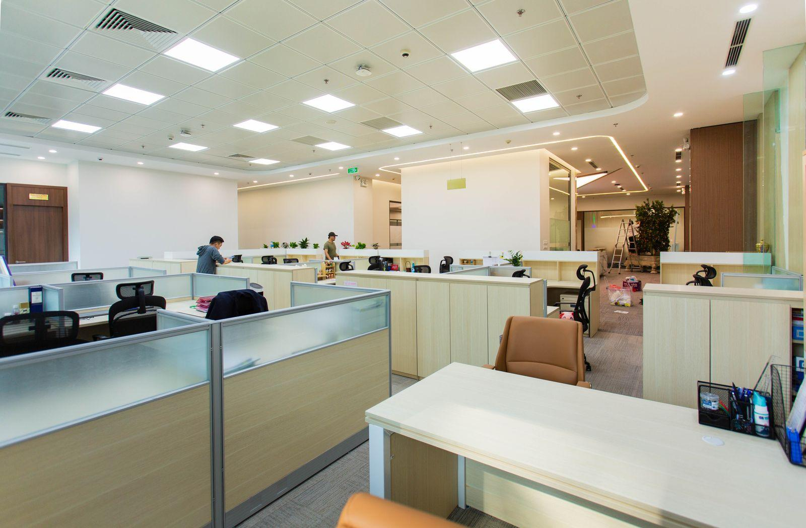
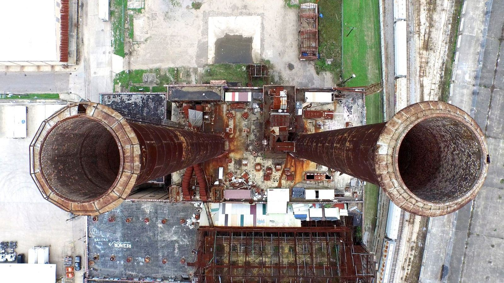
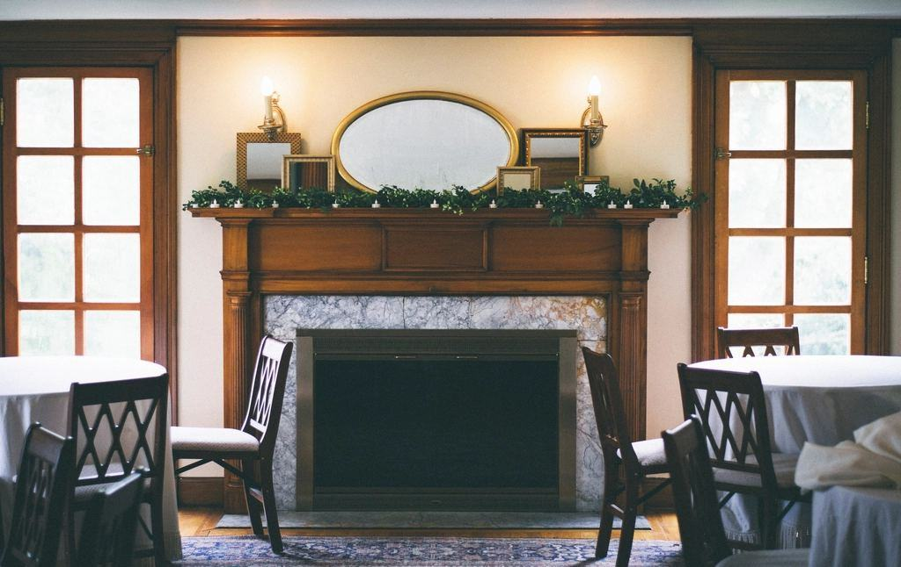
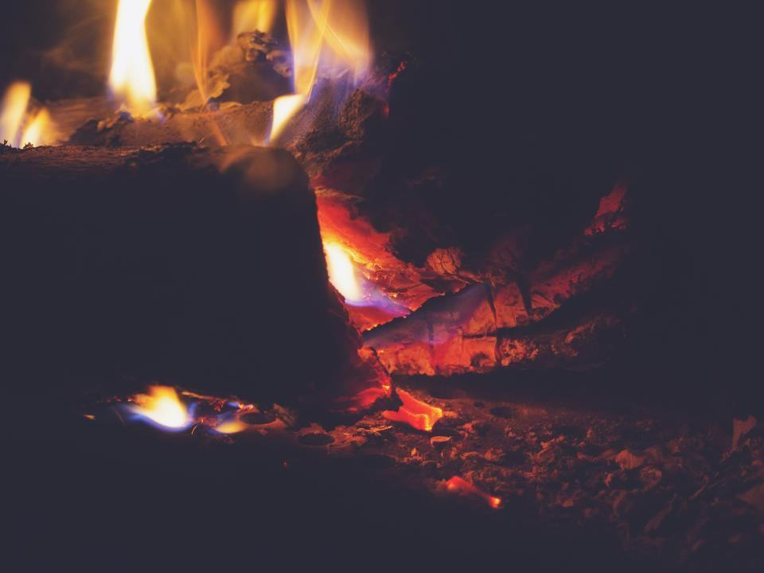

Tjänster
I dag är vi 16 personer med showroom på Karlavägen och verkstad i Danderyd. Vi har återtagit drygt 1 400 eldstäder i bostadsrätter och villor, och vi arbetar ofta i hem där parketten är från 1890 och stuckaturen inte får ett enda märke.
Vilken eldstad vill du få liv i?

Öppna spisar i bostadsrätter
I många innerstadshus är de öppna spisarna igensatta eller förbjudna att elda i, ofta i väntan på en utredning som aldrig blev av. Vi besiktar kanalen, tar fram underlag till föreningen och bygglovshandläggaren och gör spisen eldningsbar.
Arbetet avslutas alltid med brandskyddskontroll och godkänt protokoll.

Kakelugnar
En kakelugn från 1880-talet kan värma en våning i ett dygn på en brasa – om rökgångarna är täta. Vi plockar ner, rengör och sätter om kakelugnar med lerbruk och originalkakel.
Saknade kakel ersätter vi från vårt lager av omkring 4 000 återvunna plattor.

Relining av rökkanaler
Sekelskiftets rökkanaler är murade i tegel och har ofta sprickor mellan våningsplanen. Vi monterar insatsrör eller gjuter ett foder inuti kanalen, utan att bryta upp väggar i lägenheten.
Arbetet görs från taket och via eldstaden, med dammskydd och skoskydd i varje rum.

Kaminer och insatser
I villor i Djursholm, Saltsjöbaden och Lidingö monterar vi kaminer och kassetter med modulskorsten eller i befintlig murstock. Vi hjälper till med anmälan till byggnadsnämnden och kontrollplan.
Kaminerna kan provas live i showroomet på Karlavägen.
Från besiktning till första brasan
- 1
Besiktning
En tekniker filmar kanalen och provtrycker. Du får ett skriftligt utlåtande inom fem arbetsdagar.
- 2

Förslag och tillstånd
Vi tar fram fast pris och, när det behövs, underlag till föreningen och anmälan till byggnadsnämnden.
- 3

Arbetet i hemmet
Golv och möbler skyddas, och vi dammsuger med HEPA-filter. Varje kväll lämnar vi rummen städade.
- 4

Första brasan
Efter godkänd brandskyddskontroll tänder vi första brasan tillsammans med dig och går igenom spjäll och luckor.
Mästarbrev, gesällbrev och försäkring
- SkorstensfejarmästareFredrik Wahlby har mästarbrev och leder eldstadsteknikerna, som alla har behörighet för brandskyddskontroll.
- Gesällbrev i kakelugnsmakeriFyra kakelugnsmakare med gesällbrev, utfärdat via Hantverksrådet.
- Certifierad kontrollansvarigVår projektchef är certifierad kontrollansvarig enligt plan- och bygglagen.
- Ansvarsförsäkring 20 MkrUtökad ansvarsförsäkring för arbete i hem med kulturhistoriska interiörer.